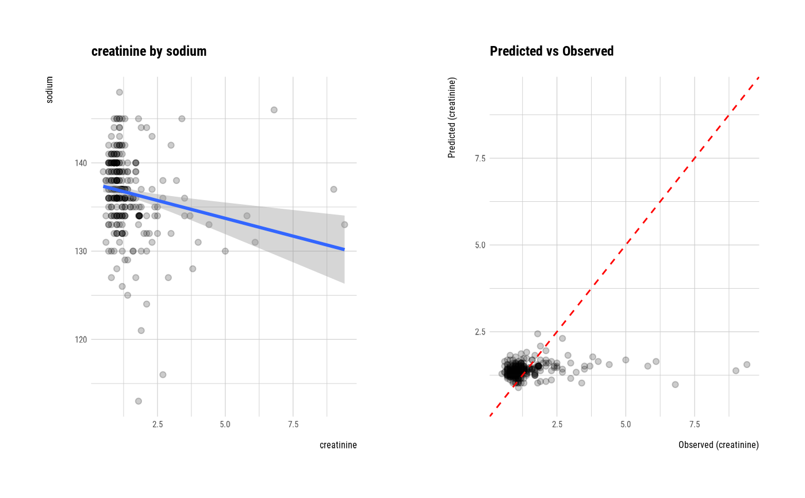
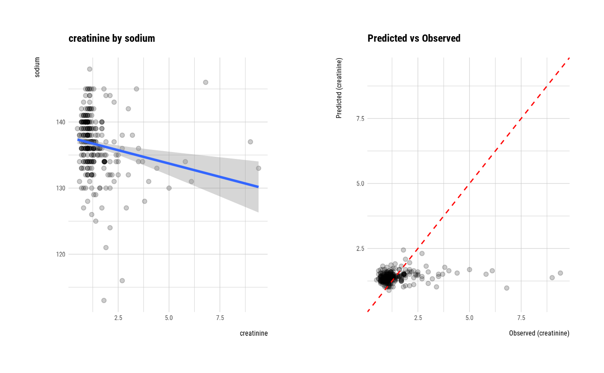

Visualize four kinds of plot by attribute of relate class.
Arguments
- x
an object of class "relate", usually, a result of a call to relate().
- model
logical. This argument selects whether to output the visualization result to the visualization of the object of the lm model to grasp the relationship between the numerical variables.
- hex_thres
an integer. Use only when the target and predictor are numeric variables. Used when the number of observations is large. Specify the threshold of the observations to draw hexabin plots that are not scatterplots. The default value is 1000.
- pal
Color palette to paint hexabin. Use only when the target and predictor are numeric variables. Applied only when the number of observations is greater than hex_thres.
- typographic
logical. Whether to apply focuses on typographic elements to ggplot2 visualization. The default is TRUE. if TRUE provides a base theme that focuses on typographic elements using hrbrthemes package.
- base_family
character. The name of the base font family to use for the visualization. If not specified, the font defined in dlookr is applied. (See details)
- ...
arguments to be passed to methods, such as graphical parameters (see par). only applies when the model argument is TRUE, and is used for ... of the plot.lm() function.
Details
The base_family is selected from "Roboto Condensed", "Liberation Sans Narrow", "NanumSquare", "Noto Sans Korean". If you want to use a different font, use it after loading the Google font with import_google_font().
See also
Examples
# \donttest{
# If the target variable is a categorical variable
categ <- target_by(heartfailure, death_event)
# If the variable of interest is a numerical variable
cat_num <- relate(categ, sodium)
cat_num
#> # A tibble: 3 × 27
#> described_variables death_event n na mean sd se_mean IQR skewness
#> <chr> <fct> <int> <int> <dbl> <dbl> <dbl> <dbl> <dbl>
#> 1 sodium No 203 0 137. 3.98 0.280 4.5 -1.22
#> 2 sodium Yes 96 0 135. 5.00 0.510 5.25 -0.677
#> 3 sodium total 299 0 137. 4.41 0.255 6 -1.05
#> # ℹ 18 more variables: kurtosis <dbl>, p00 <dbl>, p01 <dbl>, p05 <dbl>,
#> # p10 <dbl>, p20 <dbl>, p25 <dbl>, p30 <dbl>, p40 <dbl>, p50 <dbl>,
#> # p60 <dbl>, p70 <dbl>, p75 <dbl>, p80 <dbl>, p90 <dbl>, p95 <dbl>,
#> # p99 <dbl>, p100 <dbl>
summary(cat_num)
#> described_variables death_event n na mean
#> Length:3 No :1 Min. : 96.0 Min. :0 Min. :135.4
#> Class :character Yes :1 1st Qu.:149.5 1st Qu.:0 1st Qu.:136.0
#> Mode :character total:1 Median :203.0 Median :0 Median :136.6
#> Mean :199.3 Mean :0 Mean :136.4
#> 3rd Qu.:251.0 3rd Qu.:0 3rd Qu.:136.9
#> Max. :299.0 Max. :0 Max. :137.2
#> sd se_mean IQR skewness
#> Min. :3.983 Min. :0.2552 Min. :4.500 Min. :-1.2189
#> 1st Qu.:4.198 1st Qu.:0.2674 1st Qu.:4.875 1st Qu.:-1.1335
#> Median :4.412 Median :0.2795 Median :5.250 Median :-1.0481
#> Mean :4.466 Mean :0.3484 Mean :5.250 Mean :-0.9812
#> 3rd Qu.:4.707 3rd Qu.:0.3950 3rd Qu.:5.625 3rd Qu.:-0.8624
#> Max. :5.002 Max. :0.5105 Max. :6.000 Max. :-0.6766
#> kurtosis p00 p01 p05
#> Min. :2.081 Min. :113.0 Min. :120.8 Min. :127.0
#> 1st Qu.:3.100 1st Qu.:113.0 1st Qu.:122.3 1st Qu.:128.5
#> Median :4.120 Median :113.0 Median :123.9 Median :130.0
#> Mean :4.229 Mean :114.0 Mean :123.6 Mean :129.3
#> 3rd Qu.:5.304 3rd Qu.:114.5 3rd Qu.:125.0 3rd Qu.:130.5
#> Max. :6.488 Max. :116.0 Max. :126.0 Max. :131.0
#> p10 p20 p25 p30
#> Min. :130.0 Min. :132.0 Min. :133.0 Min. :134.0
#> 1st Qu.:131.0 1st Qu.:133.0 1st Qu.:133.5 1st Qu.:134.5
#> Median :132.0 Median :134.0 Median :134.0 Median :135.0
#> Mean :131.7 Mean :133.5 Mean :134.2 Mean :135.0
#> 3rd Qu.:132.5 3rd Qu.:134.2 3rd Qu.:134.8 3rd Qu.:135.5
#> Max. :133.0 Max. :134.4 Max. :135.5 Max. :136.0
#> p40 p50 p60 p70
#> Min. :134.0 Min. :135.5 Min. :136.0 Min. :138.0
#> 1st Qu.:135.0 1st Qu.:136.2 1st Qu.:137.0 1st Qu.:138.5
#> Median :136.0 Median :137.0 Median :138.0 Median :139.0
#> Mean :135.7 Mean :136.5 Mean :137.3 Mean :138.7
#> 3rd Qu.:136.5 3rd Qu.:137.0 3rd Qu.:138.0 3rd Qu.:139.0
#> Max. :137.0 Max. :137.0 Max. :138.0 Max. :139.0
#> p75 p80 p90 p95 p99
#> Min. :138.2 Min. :139.0 Min. :141.0 Min. :143.0 Min. :145
#> 1st Qu.:139.1 1st Qu.:139.5 1st Qu.:141.1 1st Qu.:143.5 1st Qu.:145
#> Median :140.0 Median :140.0 Median :141.2 Median :144.0 Median :145
#> Mean :139.4 Mean :139.7 Mean :141.2 Mean :143.7 Mean :145
#> 3rd Qu.:140.0 3rd Qu.:140.0 3rd Qu.:141.3 3rd Qu.:144.0 3rd Qu.:145
#> Max. :140.0 Max. :140.0 Max. :141.5 Max. :144.0 Max. :145
#> p100
#> Min. :146.0
#> 1st Qu.:147.0
#> Median :148.0
#> Mean :147.3
#> 3rd Qu.:148.0
#> Max. :148.0
plot(cat_num)
 # If the variable of interest is a categorical variable
cat_cat <- relate(categ, hblood_pressure)
cat_cat
#> hblood_pressure
#> death_event No Yes
#> No 137 66
#> Yes 57 39
summary(cat_cat)
#> Call: xtabs(formula = formula_str, data = data, addNA = TRUE)
#> Number of cases in table: 299
#> Number of factors: 2
#> Test for independence of all factors:
#> Chisq = 1.8827, df = 1, p-value = 0.17
plot(cat_cat)
# If the variable of interest is a categorical variable
cat_cat <- relate(categ, hblood_pressure)
cat_cat
#> hblood_pressure
#> death_event No Yes
#> No 137 66
#> Yes 57 39
summary(cat_cat)
#> Call: xtabs(formula = formula_str, data = data, addNA = TRUE)
#> Number of cases in table: 299
#> Number of factors: 2
#> Test for independence of all factors:
#> Chisq = 1.8827, df = 1, p-value = 0.17
plot(cat_cat)
 ##---------------------------------------------------
# If the target variable is a numerical variable
num <- target_by(heartfailure, creatinine)
# If the variable of interest is a numerical variable
num_num <- relate(num, sodium)
num_num
#>
#> Call:
#> lm(formula = formula_str, data = data)
#>
#> Coefficients:
#> (Intercept) sodium
#> 7.45097 -0.04433
#>
summary(num_num)
#>
#> Call:
#> lm(formula = formula_str, data = data)
#>
#> Residuals:
#> Min 1Q Median 3Q Max
#> -1.0433 -0.4329 -0.2443 0.0557 7.8454
#>
#> Coefficients:
#> Estimate Std. Error t value Pr(>|t|)
#> (Intercept) 7.45097 1.82610 4.080 5.79e-05 ***
#> sodium -0.04433 0.01336 -3.319 0.00102 **
#> ---
#> Signif. codes: 0 ‘***’ 0.001 ‘**’ 0.01 ‘*’ 0.05 ‘.’ 0.1 ‘ ’ 1
#>
#> Residual standard error: 1.018 on 297 degrees of freedom
#> Multiple R-squared: 0.03576, Adjusted R-squared: 0.03251
#> F-statistic: 11.01 on 1 and 297 DF, p-value: 0.001017
#>
plot(num_num)

# If the variable of interest is a categorical variable
num_cat <- relate(num, smoking)
num_cat
#> Analysis of Variance Table
#>
#> Response: creatinine
#> Df Sum Sq Mean Sq F value Pr(>F)
#> smoking 1 0.24 0.23968 0.2234 0.6368
#> Residuals 297 318.68 1.07301
summary(num_cat)
#>
#> Call:
#> lm(formula = formula(formula_str), data = data)
#>
#> Residuals:
#> Min 1Q Median 3Q Max
#> -0.9133 -0.4527 -0.2527 0.0170 8.0473
#>
#> Coefficients:
#> Estimate Std. Error t value Pr(>|t|)
#> (Intercept) 1.41335 0.07270 19.440 <2e-16 ***
#> smokingYes -0.06064 0.12831 -0.473 0.637
#> ---
#> Signif. codes: 0 ‘***’ 0.001 ‘**’ 0.01 ‘*’ 0.05 ‘.’ 0.1 ‘ ’ 1
#>
#> Residual standard error: 1.036 on 297 degrees of freedom
#> Multiple R-squared: 0.0007515, Adjusted R-squared: -0.002613
#> F-statistic: 0.2234 on 1 and 297 DF, p-value: 0.6368
#>
plot(num_cat)
##---------------------------------------------------
# If the target variable is a numerical variable
num <- target_by(heartfailure, creatinine)
# If the variable of interest is a numerical variable
num_num <- relate(num, sodium)
num_num
#>
#> Call:
#> lm(formula = formula_str, data = data)
#>
#> Coefficients:
#> (Intercept) sodium
#> 7.45097 -0.04433
#>
summary(num_num)
#>
#> Call:
#> lm(formula = formula_str, data = data)
#>
#> Residuals:
#> Min 1Q Median 3Q Max
#> -1.0433 -0.4329 -0.2443 0.0557 7.8454
#>
#> Coefficients:
#> Estimate Std. Error t value Pr(>|t|)
#> (Intercept) 7.45097 1.82610 4.080 5.79e-05 ***
#> sodium -0.04433 0.01336 -3.319 0.00102 **
#> ---
#> Signif. codes: 0 ‘***’ 0.001 ‘**’ 0.01 ‘*’ 0.05 ‘.’ 0.1 ‘ ’ 1
#>
#> Residual standard error: 1.018 on 297 degrees of freedom
#> Multiple R-squared: 0.03576, Adjusted R-squared: 0.03251
#> F-statistic: 11.01 on 1 and 297 DF, p-value: 0.001017
#>
plot(num_num)

# If the variable of interest is a categorical variable
num_cat <- relate(num, smoking)
num_cat
#> Analysis of Variance Table
#>
#> Response: creatinine
#> Df Sum Sq Mean Sq F value Pr(>F)
#> smoking 1 0.24 0.23968 0.2234 0.6368
#> Residuals 297 318.68 1.07301
summary(num_cat)
#>
#> Call:
#> lm(formula = formula(formula_str), data = data)
#>
#> Residuals:
#> Min 1Q Median 3Q Max
#> -0.9133 -0.4527 -0.2527 0.0170 8.0473
#>
#> Coefficients:
#> Estimate Std. Error t value Pr(>|t|)
#> (Intercept) 1.41335 0.07270 19.440 <2e-16 ***
#> smokingYes -0.06064 0.12831 -0.473 0.637
#> ---
#> Signif. codes: 0 ‘***’ 0.001 ‘**’ 0.01 ‘*’ 0.05 ‘.’ 0.1 ‘ ’ 1
#>
#> Residual standard error: 1.036 on 297 degrees of freedom
#> Multiple R-squared: 0.0007515, Adjusted R-squared: -0.002613
#> F-statistic: 0.2234 on 1 and 297 DF, p-value: 0.6368
#>
plot(num_cat)
 # Not allow typographic
plot(num_cat, typographic = FALSE)
# Not allow typographic
plot(num_cat, typographic = FALSE)
 # }
# }